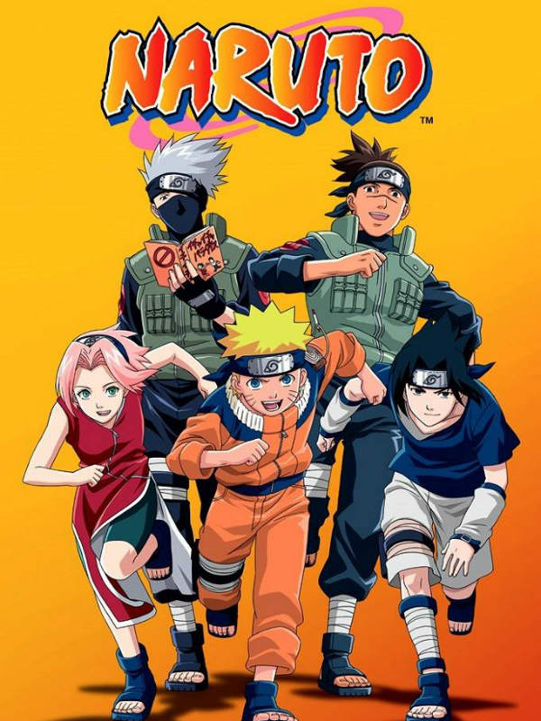
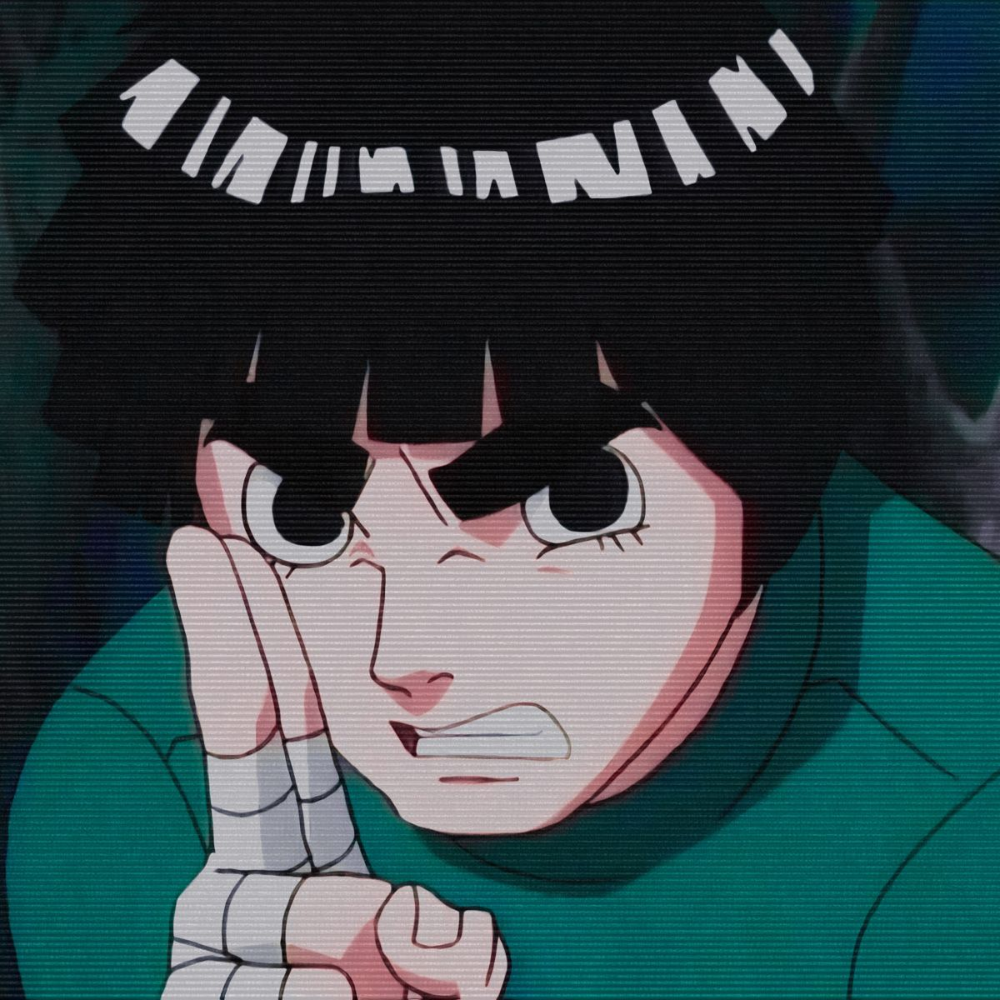
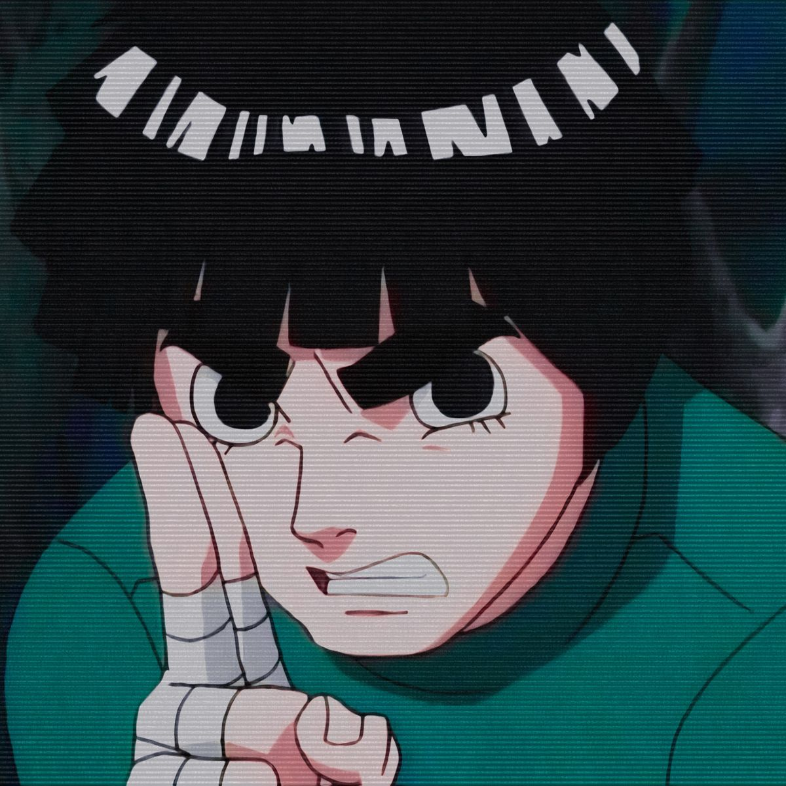
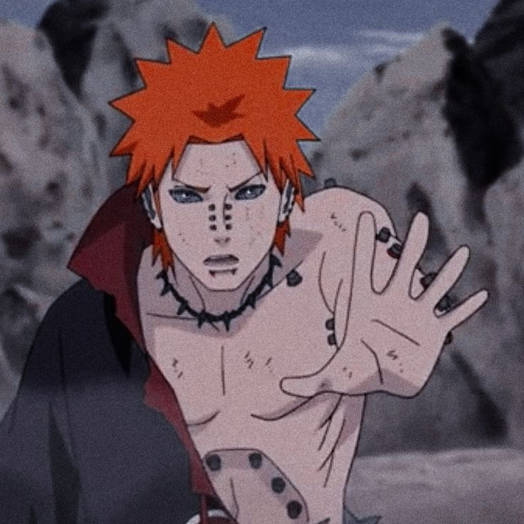
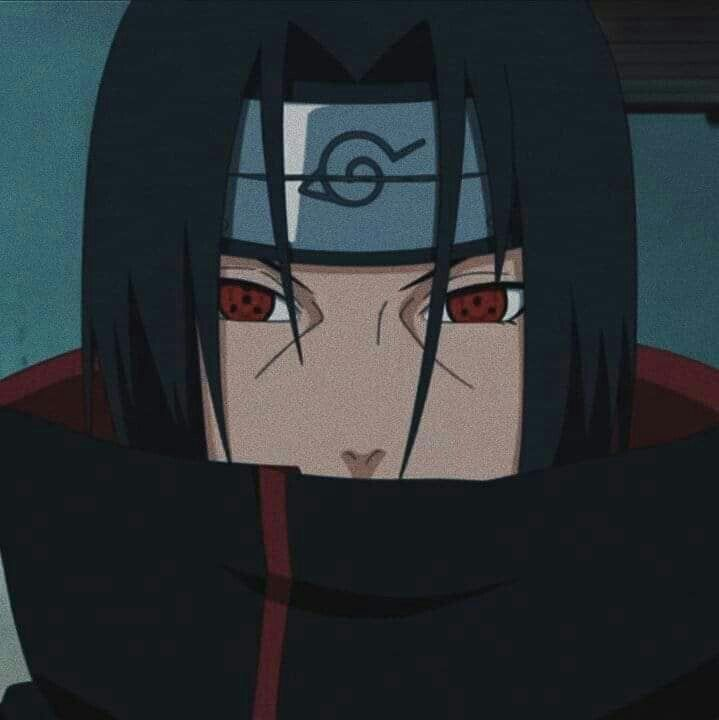
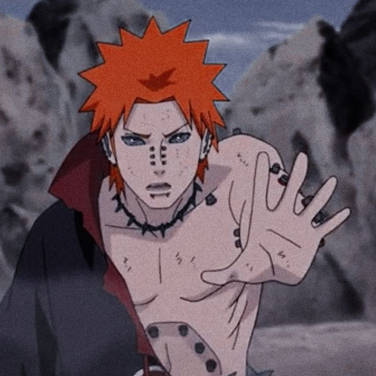
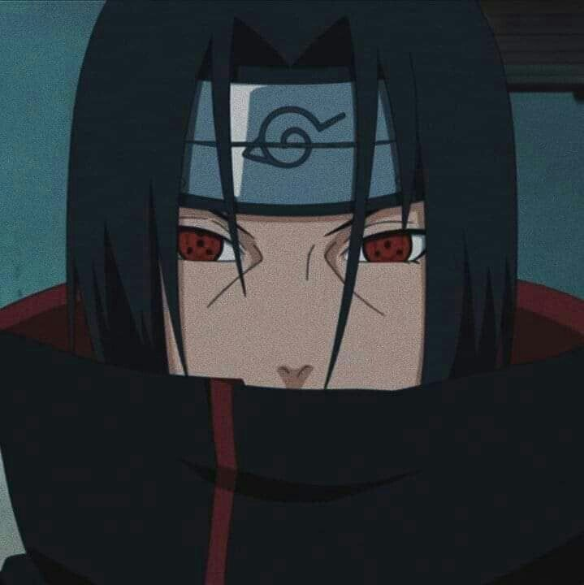

Beginning

Naruto (ナルト?), romanized as NARUTO, is a Japanese animated series based on the manga of the same name, written and illustrated by Masashi Kishimoto. The work tells the story of a teenage orphan ninja named Naruto Uzumaki, whose parents died in the attack of the Nine-Tailed Demon Fox, and who aspires to become Hokage (leader of his village) in order to be recognized as someone important within. of the village and among their peers.

 

 


